title : “Introduction to Neural Networks” subtitle : “Single Layer Perceptrons” author : Paul Schrimpf date : 2022-10-26 bibliography: “../ml.bib” options: out_width : 100% wrap : true fig_width : 8 dpi : 192 —

This work is licensed under a Creative Commons Attribution-ShareAlike 4.0 International License
About this document¶
This document was created using Weave.jl. The code is available in on github. The same document generates both static webpages and associated jupyter notebook.
Introduction¶
Neural networks, especially deep neural networks, have come to dominate some areas of machine learning. Neural networks are especially prominent in natural language processing, image classification, and reinforcement learning. This documents gives a brief introduction to neural networks.
Examples in this document will use
Flux.jl. An alternative Julia
package for deep learning is
Knet.jl. There is a
good discussion comparing Flux and Knet on
discourse..
We will not have Knet examples here, but the documentation for Knet is
excellent and worth reading even if you plan to use Flux.
Additional Reading¶
- @goodfellow2016 Deep Learning
Knet.jldocumentation especially the textbook- @klok2019 Statistics with Julia:Fundamentals for Data Science, MachineLearning and Artificial Intelligence
Single Layer Neural Networks¶
We will describe neural networks from a perspective of nonparametric estimation. Suppose we have a target function, $f: \R^p \to \R$. In many applications the target function will be a conditional expectation, $f(x) = \Er[y|x]$.
A single layer neural network approximates $f$ as follows Here $r$ is the width of the layer. $\beta_j$ are scalars. $\psi:\R \to \R$ is a nonlinear activation function. Common activation functions include:
-
Sigmoid $\psi(t) = 1/(1+e^{-t})$
-
Tanh $\psi(t) = \frac{e^t -e^{-t}}{e^t + e^{-t}}$
-
Rectified linear $\psi(t) = t 1(t\geq 0)$
The $w_j \in \R^p$ are called weights and $b_j \in \R$ are biases.
You may have heard about the universal approximation theorem. This refers to the fact that as $r$ increases, a neural network can approximate any function. Mathematically, for some large class of functions $\mathcal{F}$,
@hornik1989 contains one of the earliest results along these lines. Some introductory texts mention the universal approximation theorem as though it is something special for neural networks. This is incorrect. In particular, the universal approximation theorem does not explain why neural networks seem to be unusually good at prediction. Most nonparametric estimation methods (kernel, series, forests, etc) are universal approximators.
Training¶
Models in Flux.jl all involve a differentiable loss function. The loss
function is minimized by a variant of gradient descent. Gradients are
usually calculated using reverse automatic differentiation
(backpropagation usually refers to a variant of reverse automatic
differentiation specialized for the structue of neural networks).
Low level¶
A low level way to use Flux.jl is to write your loss function as a
typical Julia function, as in the following code block.
using Plots, Flux, Statistics, ColorSchemes
Plots.pyplot()
# some function to estimate
f(x) = sin(x^x)/2^((x^x-π/2)/π)
function simulate(n,σ=1)
x = rand(n,1).*π
y = f.(x) .+ randn(n).*σ
(x,y)
end
"""
slp(r, activation=(t)-> 1 ./ (1 .+ exp.(.-t)), dimx=1 )
Construct a single layer perceptron with width `r`.
"""
function slp(r, activation=(t)-> 1 ./ (1 .+ exp.(.-t)), dimx=1)
w = randn(dimx,r)
b = randn(1,r)
β = randn(r)
θ = (β, w, b)
pred(x) = activation(x*w.+b)*β
loss(x,y) = mean((y.-pred(x)).^2)
return(θ=θ, predict=pred,loss=loss)
end
x, y = simulate(1000, 0.5)
xg = 0:0.01:π
rs = [2, 3, 5, 7, 9]
cscheme = colorschemes[:BrBG_4];
figs = Array{typeof(plot(0)),1}(undef,length(rs))
for r in eachindex(rs)
m = slp(rs[r])
figs[r]=plot(xg, f.(xg), lab="True f", title="$(rs[r]) units", color=:red)
figs[r]=scatter!(x,y, markeralpha=0.4, markersize=1, markerstrokewidth=0, lab="")
maxiter =10000
opt = Flux.AMSGrad()
@time for i = 1:maxiter
Flux.train!(m.loss, Flux.params(m.θ), [(x, y)], opt)
if (i % (maxiter ÷ 5))==0
l=m.loss(x,y)
println("$i iteration, loss=$l")
loc=Int64.(ceil(length(xg)*i/maxiter))
yg = m.predict(xg)
figs[r]=plot!(xg,yg, lab="", color=get(cscheme, i/maxiter), alpha=1.0,
annotations=(xg[loc], yg[loc],
Plots.text("i=$i", i<maxiter/2 ? :left : :right, pointsize=10,
color=get(cscheme, i/maxiter)) )
)
end
end
display(figs[r])
end
2000 iteration, loss=0.3405142038402073
4000 iteration, loss=0.33552969213957157
6000 iteration, loss=0.33263063834748496
8000 iteration, loss=0.3303343377296417
10000 iteration, loss=0.32833621051213213
22.895320 seconds (51.73 M allocations: 5.212 GiB, 5.46% gc time, 93.89% c
ompilation time: 0% of which was recompilation)
2000 iteration, loss=0.35399266958055403
4000 iteration, loss=0.34077986211780475
6000 iteration, loss=0.3259152282301329
8000 iteration, loss=0.30701320911893115
10000 iteration, loss=0.29099465531335306
1.764655 seconds (1.10 M allocations: 3.618 GiB, 16.74% gc time)
2000 iteration, loss=0.32892873167848485
4000 iteration, loss=0.32117882869952624
6000 iteration, loss=0.31348077709061195
8000 iteration, loss=0.3067674497382727
10000 iteration, loss=0.30100306677644906
2.493379 seconds (1.10 M allocations: 5.556 GiB, 12.84% gc time)
2000 iteration, loss=0.3247974269523997
4000 iteration, loss=0.31460859502991617
6000 iteration, loss=0.30357284472870355
8000 iteration, loss=0.2929744877719111
10000 iteration, loss=0.28363628400313395
3.376675 seconds (1.10 M allocations: 7.494 GiB, 11.90% gc time)
2000 iteration, loss=0.32621573583078617
4000 iteration, loss=0.32224686212399345
6000 iteration, loss=0.31807348551768655
8000 iteration, loss=0.31339512856725193
10000 iteration, loss=0.30859356012706485
3.905210 seconds (1.10 M allocations: 9.432 GiB, 12.03% gc time)
 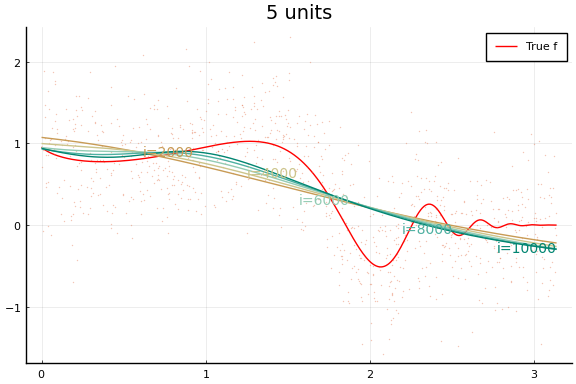 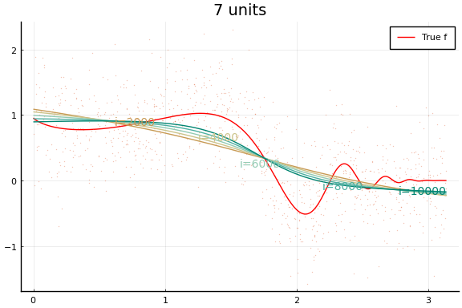
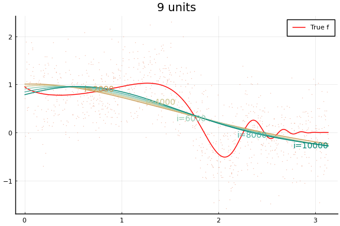
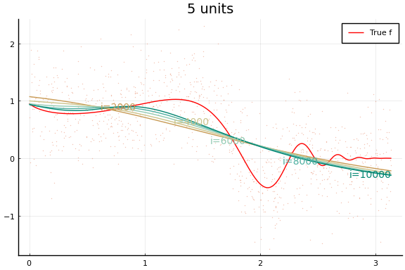 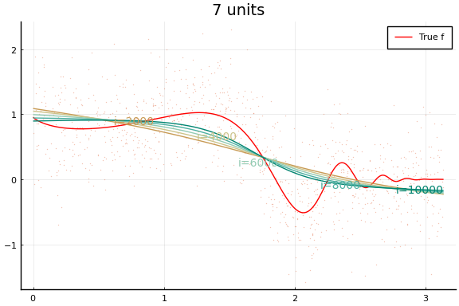
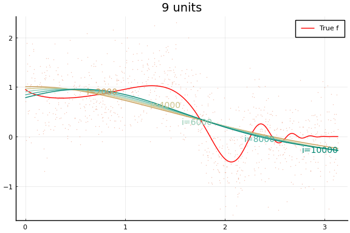
Each invocation of Flux.train! completes one iteration of gradient
descent. As you might guess from this API, it is common to train neural
networks for a fixed number of iterations instead of until convergence
to a local minimum. The number of training iterations can act as a
regularization parameter.
Notice how even though a wider network can approximate $f$ better, wider networks also take more training iterations to minimize the loss. This is typical of any minimization algorithm — the number of iterations increases with the problem size.
You may notice that the MSE does not (weakly) decrease with network size. (Or not—both the data and initial values are drawn randomly, and results may vary.) This reflects a problem in the minimization. Care must be used when choosing a minimization algorithm and initial values. We will see more of this below.
Chain interface¶
Flux.jl also contains some higher level functions for creating loss
functions for neural networks. Here is the same network as in the
previous code block, but using the higher level API.
dimx = 1
figs = Array{typeof(plot(0)),1}(undef,length(rs))
initmfigs = Array{typeof(plot(0)),1}(undef,length(rs))
xt = reshape(Float32.(x), 1, length(x))
yt = reshape(Float32.(y), 1, length(y))
for r in eachindex(rs)
l = rs[r]
m = Chain(x->Flux.normalise(x, dims=2),
Dense(dimx, rs[r], Flux.σ), Dense(rs[r], 1))
initmfigs[r] = plot(xg, m[1:(end-1)](xg')', lab="", legend=false)
figs[r]=plot(xg, f.(xg), lab="", title="$(rs[r]) units", color=:red)
figs[r]=scatter!(x,y, alpha=0.4, markersize=1, markerstrokewidth=0, lab="")
maxiter = 3000
opt = Flux.AMSGrad()
@time for i = 1:maxiter
Flux.train!((x,y)->Flux.mse(m(x),y), Flux.params(m), [(xt, yt)], opt ) #,
#cb = Flux.throttle(()->@show(Flux.mse(m(xt),yt)),100))
if i==1 || (i % (maxiter ÷ 5))==0
l=Flux.mse(m(xt), yt)
println("$(rs[r]) units, $i iterations, loss=$l")
yg = (m(xg'))'
loc=Int64.(ceil(length(xg)*i/maxiter))
figs[r]=plot!(xg,yg, lab="", color=get(cscheme, i/maxiter), alpha=1.0,
annotations=(xg[loc], yg[loc],
Plots.text("i=$i", i<maxiter/2 ? :left : :right, pointsize=10,
color=get(cscheme, i/maxiter)) )
)
end
end
display(figs[r])
end
2 units, 1 iterations, loss=2.5216475
2 units, 600 iterations, loss=0.3886186
2 units, 1200 iterations, loss=0.32459968
2 units, 1800 iterations, loss=0.3043197
2 units, 2400 iterations, loss=0.29600164
2 units, 3000 iterations, loss=0.29112598
13.571872 seconds (31.20 M allocations: 1.895 GiB, 5.29% gc time, 95.37% c
ompilation time)
3 units, 1 iterations, loss=0.6752813
3 units, 600 iterations, loss=0.31196
3 units, 1200 iterations, loss=0.3035535
3 units, 1800 iterations, loss=0.2956239
3 units, 2400 iterations, loss=0.2885932
3 units, 3000 iterations, loss=0.2825464
0.565220 seconds (588.54 k allocations: 450.978 MiB, 5.18% gc time)
5 units, 1 iterations, loss=0.4086862
5 units, 600 iterations, loss=0.31104246
5 units, 1200 iterations, loss=0.289784
5 units, 1800 iterations, loss=0.273983
5 units, 2400 iterations, loss=0.26490602
5 units, 3000 iterations, loss=0.2597258
0.701387 seconds (603.56 k allocations: 564.423 MiB, 8.87% gc time)
7 units, 1 iterations, loss=0.44023964
7 units, 600 iterations, loss=0.3229971
7 units, 1200 iterations, loss=0.30812788
7 units, 1800 iterations, loss=0.28997898
7 units, 2400 iterations, loss=0.2764376
7 units, 3000 iterations, loss=0.26902887
0.830093 seconds (603.57 k allocations: 679.150 MiB, 7.33% gc time)
9 units, 1 iterations, loss=0.4743434
9 units, 600 iterations, loss=0.3255296
9 units, 1200 iterations, loss=0.31679815
9 units, 1800 iterations, loss=0.30230075
9 units, 2400 iterations, loss=0.28530028
9 units, 3000 iterations, loss=0.2729724
0.855554 seconds (603.57 k allocations: 793.740 MiB, 6.68% gc time)

 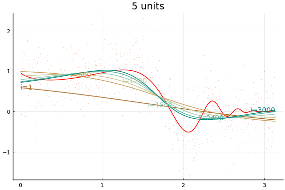 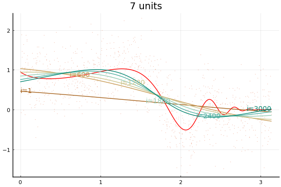
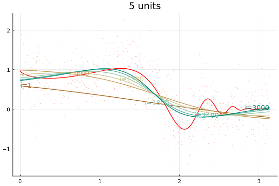 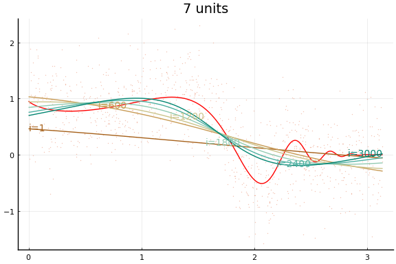

The figures do not appear identical to the first example since the initial values differ, and the above code first normalises the $x$s.
Initial values¶
Initial values are especially important with neural networks because activation functions tend to be flat at the extremes. This causes the gradient of the loss function to vanish in some regions of the parameter space. For gradient descent to be successful, it is important to avoid regions with vanishing gradients. The default initial values of $w$ and $b$ used by Flux tend to work better with normalised $x$. The initial activation are shown below.
plot(initmfigs..., legend=false)

At these initial values, $w’x + b$, does change sign for each activation, but $w’x$ is small enough that $\psi(w’x + b)$ is approximately linear. This will make it initially difficult to distinguish $\beta \psi’$ from $w$,
We can improve the fit by choosing initial values more carefully. The following code choses initial $w$ and $b$ to make sure the activation functions vary nonlinearly in the support of $x$. The initial activations functions are plotted below.
dimx = 1
figs = Array{typeof(plot(0)),1}(undef,length(rs))
initmfigs = Array{typeof(plot(0)),1}(undef,length(rs))
xt = reshape(Float32.(x), 1, length(x))
yt = reshape(Float32.(y), 1, length(y))
for r in eachindex(rs)
l = rs[r]
m = Chain(Dense(dimx, l, Flux.σ), Dense(rs[r], 1))
# adjust initial weights to make sure each node is nonlinear in support of X
m[1].weight .= -m[1].weight .+ sign.(m[1].weight)*2*π
# adjust initial intercepts to be in the support of w*x
m[1].bias .= -m[1].bias .- m[1].weight[:].*(π/(l+1):π/(l+1):π*l/(l+1))
# make initial output weights optimal given first layer
X = vcat(1, m[1](xt))
bols = (X*X') \ (X*y)
m[2].weight .= -m[2].weight .+ bols[2:end]'
m[2].bias .= -m[2].bias .- mean(m(xt) .- yt)
initmfigs[r] = plot(xg, m[1](xg')', lab="", legend=false)
figs[r]=plot(xg, f.(xg), lab="", title="$(rs[r]) units", color=:red)
figs[r]=scatter!(x,y, alpha=0.4, markersize=1, markerstrokewidth=0, lab="")
maxiter = 5000
opt = Flux.AMSGrad()
@time for i = 1:maxiter
Flux.train!((x,y)->Flux.mse(m(x),y), Flux.params(m), [(xt, yt)], opt ) #,
#cb = Flux.throttle(()->@show(Flux.mse(m(xt),yt)),100))
if i==1 || (i % (maxiter ÷ 5))==0
l=Flux.mse(m(xt), yt)
println("$(rs[r]) units, $i iterations, loss=$l")
yg = m(xg')'
loc=Int64.(ceil(length(xg)*i/maxiter))
figs[r]=plot!(xg,yg, lab="", color=get(cscheme, i/maxiter), alpha=1.0,
annotations=(xg[loc], yg[loc],
Plots.text("i=$i", i<maxiter/2 ? :left : :right, pointsize=10,
color=get(cscheme, i/maxiter)) )
)
end
end
end
nothing
2 units, 1 iterations, loss=0.5088957
2 units, 1000 iterations, loss=0.25412744
2 units, 2000 iterations, loss=0.2530693
2 units, 3000 iterations, loss=0.2524892
2 units, 4000 iterations, loss=0.2521191
2 units, 5000 iterations, loss=0.2518584
0.894042 seconds (1.09 M allocations: 490.553 MiB, 10.94% gc time, 31.56%
compilation time)
3 units, 1 iterations, loss=0.35247248
3 units, 1000 iterations, loss=0.24518688
3 units, 2000 iterations, loss=0.24173486
3 units, 3000 iterations, loss=0.23994897
3 units, 4000 iterations, loss=0.23872398
3 units, 5000 iterations, loss=0.23777618
0.662445 seconds (505.33 k allocations: 556.257 MiB, 7.84% gc time)
5 units, 1 iterations, loss=0.39041007
5 units, 1000 iterations, loss=0.24249096
5 units, 2000 iterations, loss=0.24118099
5 units, 3000 iterations, loss=0.24024814
5 units, 4000 iterations, loss=0.23951007
5 units, 5000 iterations, loss=0.23890525
0.818795 seconds (530.34 k allocations: 745.233 MiB, 7.52% gc time)
7 units, 1 iterations, loss=0.57222635
7 units, 1000 iterations, loss=0.24171682
7 units, 2000 iterations, loss=0.23901226
7 units, 3000 iterations, loss=0.23800443
7 units, 4000 iterations, loss=0.23746149
7 units, 5000 iterations, loss=0.23709208
0.967961 seconds (530.35 k allocations: 936.345 MiB, 6.01% gc time)
9 units, 1 iterations, loss=0.392334
9 units, 1000 iterations, loss=0.23291235
9 units, 2000 iterations, loss=0.23255312
9 units, 3000 iterations, loss=0.23236102
9 units, 4000 iterations, loss=0.23223025
9 units, 5000 iterations, loss=0.2321317
1.159668 seconds (530.35 k allocations: 1.101 GiB, 6.74% gc time)
display(plot(initmfigs..., legend=false))

And the fit figures.
for f in figs
display(f)
end

 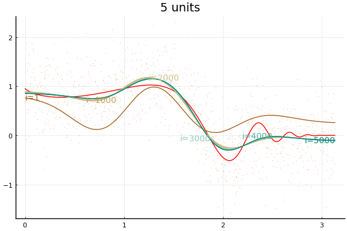
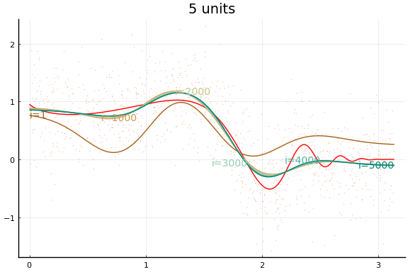 

We can see that the training is now much more successful. Choosing initial values carefully was very helpful.
Rectified linear¶
Large applications of neural networks often use rectified linear activation for efficiency. Let’s see how the same example behaves with (leaky) rectified linear activation.
dimx = 1
figs = Array{typeof(plot(0)),1}(undef,length(rs))
for r in eachindex(rs)
l = rs[r]
m = Chain(Dense(dimx, rs[r], Flux.leakyrelu), Dense(rs[r], 1)) # notice the change
# adjust initial weights to make sure each node is nonlinear in support of X
m[1].weight .= -m[1].weight .+ sign.(m[1].weight)*2*π
# adjust initial intercepts to be in the support of w*x
m[1].bias .= -m[1].bias .- m[1].weight[:].*(π/(l+1):π/(l+1):π*l/(l+1))
# make initial output weights optimal given first layer
X = vcat(1, m[1](xt))
bols = (X*X') \ (X*y)
m[2].weight .= -m[2].weight .+ bols[2:end]'
m[2].bias .= -m[2].bias .- mean(m(xt) .- yt)
initmfigs[r] = plot(xg, m[1:(end-1)](xg')', lab="", legend=false)
figs[r]=plot(xg, f.(xg), lab="", title="$(rs[r]) units", color=:red)
figs[r]=scatter!(x,y, alpha=0.4, markersize=1, markerstrokewidth=0, lab="")
maxiter = 5000
opt=Flux.AMSGrad()
@time for i = 1:maxiter
Flux.train!((x,y)->Flux.mse(m(x),y), Flux.params(m), [(xt, yt)], opt ) #,
#cb = Flux.throttle(()->@show(Flux.mse(m(xt),yt)),100))
if i==1 || (i % (maxiter ÷ 5))==0
l=Flux.mse(m(xt), yt)
println("$(rs[r]) units, $i iterations, loss=$l")
yg = m(xg')'
loc=Int64.(ceil(length(xg)*i/maxiter))
figs[r]=plot!(xg,yg, lab="", color=get(cscheme, i/maxiter), alpha=1.0,
annotations=(xg[loc], yg[loc],
Plots.text("i=$i", i<maxiter/2 ? :left : :right, pointsize=10,
color=get(cscheme, i/maxiter)) )
)
end
end
end
display(plot(initmfigs..., legend=false) )
for f in figs
display(f)
end
2 units, 1 iterations, loss=30.522676
2 units, 1000 iterations, loss=0.9456938
2 units, 2000 iterations, loss=0.42380863
2 units, 3000 iterations, loss=0.3524633
2 units, 4000 iterations, loss=0.34044683
2 units, 5000 iterations, loss=0.3378198
1.222094 seconds (2.62 M allocations: 563.706 MiB, 12.49% gc time, 56.41%
compilation time)
3 units, 1 iterations, loss=53.149567
3 units, 1000 iterations, loss=1.0380532
3 units, 2000 iterations, loss=0.4694478
3 units, 3000 iterations, loss=0.37148407
3 units, 4000 iterations, loss=0.34802124
3 units, 5000 iterations, loss=0.33944148
0.501871 seconds (505.33 k allocations: 555.647 MiB, 11.64% gc time)
5 units, 1 iterations, loss=5.7734737
5 units, 1000 iterations, loss=0.97030234
5 units, 2000 iterations, loss=0.577969
5 units, 3000 iterations, loss=0.42891812
5 units, 4000 iterations, loss=0.35565048
5 units, 5000 iterations, loss=0.31378043
0.554351 seconds (530.34 k allocations: 744.622 MiB, 8.81% gc time)
7 units, 1 iterations, loss=1.5370082
7 units, 1000 iterations, loss=0.26730484
7 units, 2000 iterations, loss=0.24225095
7 units, 3000 iterations, loss=0.23697637
7 units, 4000 iterations, loss=0.2352991
7 units, 5000 iterations, loss=0.23449303
0.644525 seconds (530.35 k allocations: 935.735 MiB, 8.77% gc time)
9 units, 1 iterations, loss=62.44543
9 units, 1000 iterations, loss=0.2529448
9 units, 2000 iterations, loss=0.2506077
9 units, 3000 iterations, loss=0.2489944
9 units, 4000 iterations, loss=0.24789973
9 units, 5000 iterations, loss=0.2470229
0.712341 seconds (530.35 k allocations: 1.100 GiB, 10.07% gc time)
 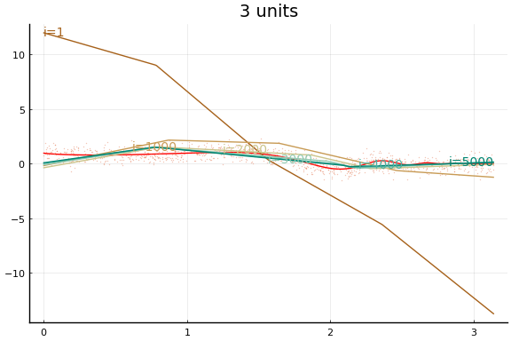
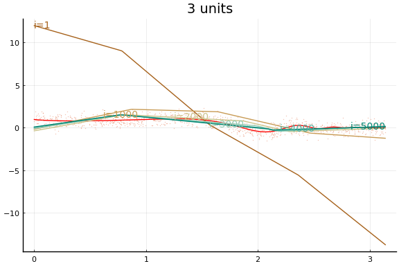  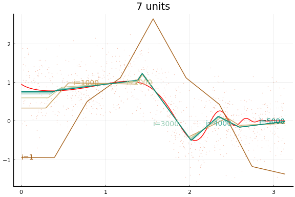 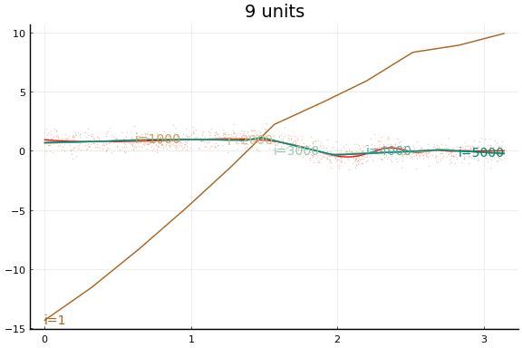
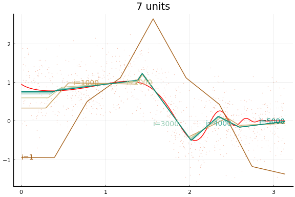 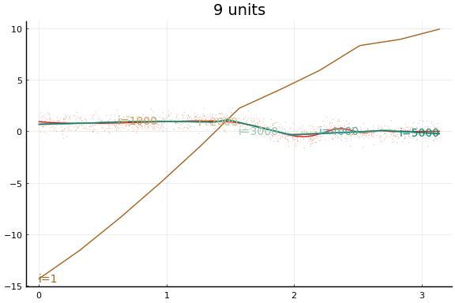
Stochastic Gradient descent¶
The above examples all used the full data in each iteration of gradient
descent. Computation can be reduced and the parameter space can possibly
be explored more by using stochastic gradient descent. In stochastic
gradient descent, a subset (possibly even of size 1) of the data is used
to compute the gradient for each iteration. To accomplish this in Flux,
we should give the Flux.train! function an array of tuples of data
consisting of the subsets to be used in iteration. Each call to
Flux.train! loops over all tuples of data, doing one gradient descent
iteration for each. This whole process is referred to as a training
epoch. You could use (the below does not) Flux’s @epochs macro for
running multiple training epochs without writing a loop.
dimx = 1
figs = Array{typeof(plot(0)),1}(undef,length(rs))
for r in eachindex(rs)
l = rs[r]
m = Chain(Dense(dimx, rs[r], Flux.leakyrelu), Dense(rs[r], 1)) # notice the change
# adjust initial weights to make sure each node is nonlinear in support of X
m[1].weight .= -m[1].weight .+ sign.(m[1].weight)*2*π
# adjust initial intercepts to be in the support of w*x
m[1].bias .= -m[1].bias .- m[1].weight[:].*(π/(l+1):π/(l+1):π*l/(l+1))
# make initial output weights optimal given first layer
X = vcat(1, m[1](xt))
bols = (X*X') \ (X*y)
m[2].weight .= -m[2].weight .+ bols[2:end]'
m[2].bias .= -m[2].bias .- mean(m(xt) .- yt)
initmfigs[r] = plot(xg, m[1:(end-1)](xg')', lab="", legend=false)
figs[r]=plot(xg, f.(xg), lab="", title="$(rs[r]) units", color=:red)
figs[r]=scatter!(x,y, alpha=0.4, markersize=1, markerstrokewidth=0, lab="")
maxiter = 3000
opt = Flux.AMSGrad()
@time for i = 1:maxiter
Flux.train!((x,y)->Flux.mse(m(x),y), Flux.params(m),
# partition data into 100 batches
[(xt[:,p], yt[:,p]) for p in Base.Iterators.partition(1:length(y), 100)],
opt ) #,
if i==1 || (i % (maxiter ÷ 5))==0
l=Flux.mse(m(xt), yt)
println("$(rs[r]) units, $i iterations, loss=$l")
yg = m(xg')'
loc=Int64.(ceil(length(xg)*i/maxiter))
figs[r]=plot!(xg,yg, lab="", color=get(cscheme, i/maxiter), alpha=1.0,
annotations=(xg[loc], yg[loc],
Plots.text("i=$i", i<maxiter/2 ? :left : :right, pointsize=10,
color=get(cscheme, i/maxiter)) )
)
end
end
end
for f in figs
display(f)
end
2 units, 1 iterations, loss=12.725298
2 units, 600 iterations, loss=0.35298568
2 units, 1200 iterations, loss=0.33057436
2 units, 1800 iterations, loss=0.32411447
2 units, 2400 iterations, loss=0.32136407
2 units, 3000 iterations, loss=0.3199156
1.150724 seconds (2.94 M allocations: 585.695 MiB, 12.07% gc time, 21.72%
compilation time)
3 units, 1 iterations, loss=7.36269
3 units, 600 iterations, loss=0.26589838
3 units, 1200 iterations, loss=0.25396004
3 units, 1800 iterations, loss=0.24879204
3 units, 2400 iterations, loss=0.24615657
3 units, 3000 iterations, loss=0.24489298
0.965805 seconds (2.39 M allocations: 624.891 MiB, 15.56% gc time)
5 units, 1 iterations, loss=0.63983136
5 units, 600 iterations, loss=0.24252298
5 units, 1200 iterations, loss=0.24149352
5 units, 1800 iterations, loss=0.24134158
5 units, 2400 iterations, loss=0.24133162
5 units, 3000 iterations, loss=0.24133112
0.949103 seconds (2.39 M allocations: 732.613 MiB, 12.82% gc time)
7 units, 1 iterations, loss=0.3980028
7 units, 600 iterations, loss=0.23584402
7 units, 1200 iterations, loss=0.23501928
7 units, 1800 iterations, loss=0.2345592
7 units, 2400 iterations, loss=0.23416217
7 units, 3000 iterations, loss=0.23399206
1.053280 seconds (2.39 M allocations: 853.154 MiB, 13.59% gc time)
9 units, 1 iterations, loss=15.907017
9 units, 600 iterations, loss=0.2532536
9 units, 1200 iterations, loss=0.24669476
9 units, 1800 iterations, loss=0.24529259
9 units, 2400 iterations, loss=0.24477518
9 units, 3000 iterations, loss=0.24433182
1.024804 seconds (2.39 M allocations: 972.322 MiB, 11.88% gc time)
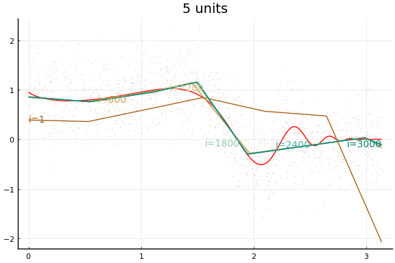 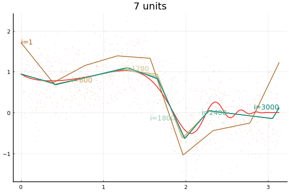 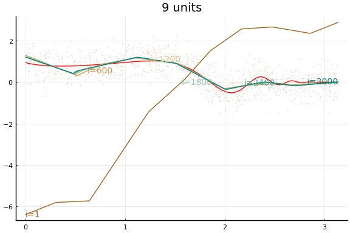
Here we see an in sample MSE about as low as the best previous result. Note, however, the longer training time. Each “iteration” above is an epoch, which consists of 10 gradient descent steps using the 10 different subsets (or batches) of data of size 100.
Rate of convergence¶
- @chen1999
- $f(x) = \Er[y|x]$ with Fourier representation where $\int (\sqrt{a’a} \vee 1) d|\sigma_f|(a) < \infty$
- Network sieve :
The setup in @chen1999 is more general. They consider estimating both $f$ and its first $m$ derivatives. Here, we focus on the case of just estimating $f$. @chen1999 also consider estimation of functions other than conditional expectations.
The restriction on $f$ in the second bullet is used to control approximation error. The second bullet says that $f$ is the inverse Fourier transform of measure $\sigma_f$. The bite of the restriction on $f$ comes from the requirement that $\sigma_f$ be absolutely integral, $\int (\sqrt{a’a} \vee 1) d|\sigma_f|(a) < \infty$. It would be a good exercise to check whether this restriction is satisfied by some familiar types of functions. @barron1993 first showed that neural networks approximate this class of functions well, and compares the approximation rate of neural networks to other function approximation results.
- See @farrel2021 for more contemporary approach, applicable to currently used network architectures